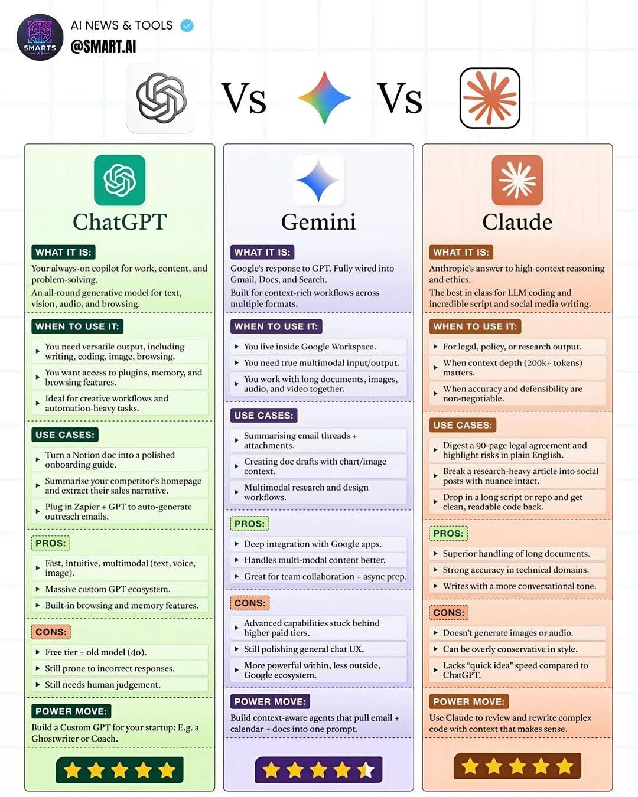

Hujan deras mengguyur lanskap beton Jakarta, mengubah jendela panorama di lantai empat puluh dua gedung Pacific Century Place menjadi kanvas air yang bergetar. Di bawah sana, lampu-lampu kendaraan di kawasan SCBD merayap lambat, menyerupai sungai rubi dan berlian yang mengalir dalam pembuluh darah kota metropolitan. Waktu menunjukkan pukul sebelas malam, sebuah jam di mana sebagian besar kewarasan telah lama meninggalkan meja kantor. Namun, di dalam ruangan bernuansa industrial minimalis ini, udara justru terasa berderak oleh tegangan listrik dan konsentrasi tingkat tinggi.
Empat cangkir kopi hitam yang telah kehilangan kehangatannya menjadi saksi bisu. Di sekeliling meja pualam oval yang menjadi pusat ruangan, duduk empat individu. Mereka adalah representasi sempurna dari kelas pekerja kerah putih modern Jakarta: terdidik, ambisius, dan saat ini, didera tenggat waktu yang kejam. Mereka adalah tim inti dari Nusantara Ventures, sebuah firma konsultan strategis yang sedang menyusun proposal akuisisi senilai triliunan rupiah untuk sebuah konglomerasi energi terbarukan.
Anya mengusap pelipisnya. Sebagai Direktur Proyek, beban terbesar berada di pundaknya yang berbalut blazer linen berwarna navy. Lulusan S2 Manajemen dari Universitas Indonesia ini memiliki reputasi sebagai arsitek kesepakatan yang tak kenal ampun. Matanya yang tajam menatap layar proyeksi yang masih menampilkan salindia kosong dengan judul "Analisis Kompetitor dan Mitigasi Risiko".
"Kita butuh narasi penjualan yang tidak hanya masuk akal secara finansial, tetapi juga menyentuh aspek emosional investor," suara Anya memecah kesunyian, tegas namun menyiratkan kelelahan. "Presentasi besok pagi pukul delapan. Saya tidak mau melihat angka mati. Saya ingin cerita. Bima, bagaimana progres penarikan data dari situs kompetitor?"
Bima, pria berkacamata round-frame dengan kemeja flanel yang lengannya digulung asal, tersenyum tipis. Ia adalah Kepala Inovasi Digital mereka, seorang mantan peretas pertumbuhan dari sebuah perusahaan rintisan unicorn. Jari-jarinya menari di atas papan ketik mekanisnya dengan kecepatan konstan.
"Sudah hampir selesai, Nya," jawab Bima santai. "Aku sedang merangkum beranda semua kompetitor utama kita. Kau tahu aku tidak suka bekerja manual. Aku menggunakan kopilotku yang selalu menyala. Dia model generatif yang serba bisa untuk teks, visi, bahkan penelusuran web secara langsung."
Anya mengangkat alis. "Maksudmu kau menggunakan ChatGPT lagi?"
"Tepat," Bima mengangguk, memutar layar laptopnya agar Anya bisa melihat antarmuka gelap dengan logo heksagonal hijau. "Ini bukan sekadar obrolan biasa. Aku sudah membangun Custom GPT khusus untuk proyek ini. Aku menamainya 'Eco-Strategist'. Aku mengintegrasikannya dengan Zapier untuk secara otomatis menghasilkan email pendekatan ke para pemangku kepentingan. Selain itu, aku baru saja mengubah dokumen kerangka kerja kita di Notion menjadi panduan onboarding yang sangat rapi untuk tim presentasi besok. Cepat, intuitif, dan multimodal. Ini sangat ideal untuk alur kerja kreatif kita yang butuh otomatisasi tingkat tinggi."
Anya mengangguk pelan, mengakui efisiensi Bima. "Bagus. Pastikan bahasanya tidak terdengar terlalu robotik. Terkadang, ia masih rentan memberikan respons yang kurang akurat jika tidak diawasi. Kita tetap butuh penilaian manusiawi di sana."
"Tenang saja, Nya. Power move-ku selalu tentang membangun agen sadar konteks. Aku yang pegang kendali," Bima mengedipkan mata, kembali fokus pada layarnya.
Di seberang Bima, duduk Citra. Rambutnya diikat rapi ke belakang, memperlihatkan wajah yang tenang namun penuh perhitungan. Citra adalah Kepala Analisis Data, seorang jenius statistik lulusan ITB. Berbeda dengan layar Bima yang penuh dengan jendela terminal dan ekstensi pihak ketiga, layar Citra adalah hamparan rapi dari ekosistem Google Workspace. Google Docs, Sheets, Slides, dan Gmail terbuka dalam tab-tab yang tersusun metodis.
"Bima, kecepatanmu memang mengesankan," potong Citra dengan nada tenang, matanya tak lepas dari diagram pencar (scatter plot) yang sedang ia teliti. "Tapi proyek ini bukan sekadar tentang narasi eksternal. Kita berurusan dengan tumpukan dokumen internal, ribuan surel, dan data historis yang sangat besar. Otomatisasi lepasmu bisa kehilangan benang merah."
Bima mendengus pelan, sebuah pertahanan ego khas pekerja teknologi. "Lalu apa solusimu, Cit? Menghitungnya satu per satu dengan sempoa digitalmu?"
Citra tidak terpancing. Ia mengetuk layar sentuhnya. "Aku menggunakan Gemini. Ini adalah respons Google terhadap model-model yang ada, dan keunggulannya terletak pada integrasi yang dalam dengan aplikasi yang kita gunakan setiap hari. Alur kerjaku kaya akan konteks lintas format."
Citra memproyeksikan layarnya ke monitor utama di dinding ruangan. Anya dan Bima mengalihkan pandangan mereka.
"Lihat ini," Citra menunjuk ke sebuah dokumen draf. "Saya baru saja merangkum seluruh utas surel dari direksi, lengkap dengan lampiran PDF laporan keuangan kuartal lalu. Dalam satu jendela yang sama, saya meminta Gemini untuk membuat draf dokumen analisis yang langsung menyertakan grafik dan gambar dari konteks tersebut. Ini adalah input dan output multimodal yang sesungguhnya. Saya hidup di dalam Workspace, dan asisten ini menangani kolaborasi tim dan persiapan asinkron kita dengan sangat baik."
Anya tampak terkesan. "Jadi kau bisa menarik data dari drive internal kita tanpa harus mengunggahnya secara manual ke platform eksternal?"
"Tepat sekali, Anya. Ini adalah alat penelitian dan desain multimodal yang komprehensif. Kelemahannya mungkin pengalaman penggunanya dalam mode obrolan umum masih terus disempurnakan, dan beberapa kemampuan lanjutannya terkunci di tingkat berbayar yang lebih tinggi. Tapi untuk kita? Mengingat kita hidup dalam ekosistem ini, ini sangat kuat. Saya sedang membangun agen sadar konteks yang menarik surel, kalender, dan dokumen ke dalam satu prompt utuh."
Suara dehaman berat menghentikan diskusi antara Bima dan Citra. Di ujung meja, Dion, Penasihat Hukum Senior mereka, akhirnya bersuara. Dion adalah pria paruh baya yang selalu tampil rapi dengan setelan jas, meskipun malam telah larut. Ia adalah alumni Fakultas Hukum Universitas Leiden, seorang pragmatis sejati yang tidak mudah tergoda oleh jargon teknologi yang mencolok.
"Kalian berdua bicara tentang kecepatan dan integrasi," kata Dion, suaranya dalam dan berwibawa. "Narasi yang bagus dan grafik yang indah tidak akan ada artinya jika kita digugat karena pelanggaran kepatuhan atau gagal mendeteksi klausul tersembunyi dalam perjanjian akuisisi ini. Dan izinkan saya mengingatkan, dokumen legal yang sedang kita hadapi ini tebalnya sembilan puluh halaman, penuh dengan terminologi teknis yang bisa menjebak."
Dion memutar laptopnya, menampilkan antarmuka yang bersih, minimalis, dengan warna krem yang menenangkan mata. Logo bintang bersudut banyak tampak di sudut layar.
"Sementara kalian sibuk merangkai kata dan gambar, saya mengandalkan Claude," lanjut Dion. "Ini adalah jawaban dari Anthropic untuk penalaran konteks tinggi dan etika. Saat akurasi dan kemampuan untuk mempertahankan argumen adalah hal yang mutlak dan tidak bisa ditawar, ini adalah satu-satunya alat yang saya percayai."
Bima menyipitkan mata. "Claude? Bukankah itu terlalu kaku? Cenderung konservatif?"
Dion tersenyum simpul, sebuah senyuman dari seseorang yang tahu ia memegang kartu truf. "Justru sifat konservatifnya yang saya butuhkan, Bima. Model ini mungkin kekurangan kecepatan untuk memberikan ide kilat seperti mainanmu itu, dan ya, ia sama sekali tidak menghasilkan gambar atau audio. Tapi lihat apa yang dilakukannya."
Dion menunjuk paragraf-paragraf yang disorot di layarnya.
"Saya memasukkan seluruh perjanjian legal sembilan puluh halaman itu. Saya memintanya untuk mencerna dokumen tersebut dan menyoroti semua risiko potensial dalam bahasa Inggris yang mudah dipahami. Hasilnya luar biasa. Ia tidak berhalusinasi. Penanganannya terhadap dokumen panjang sangat superior. Tidak hanya itu, tingkat akurasinya dalam domain teknis hukum ini tidak tertandingi. Saya bahkan memintanya untuk memecah artikel riset yang sangat berat tentang regulasi energi hijau menjadi poin-poin yang bisa digunakan Anya untuk presentasi, tanpa kehilangan sedikit pun nuansa kritisnya."
Dion menatap tajam ke arah timnya. "Dan jika kalian butuh, model ini adalah yang terbaik di kelasnya untuk menulis kode dasar dan menulis naskah yang sangat baik dengan nada yang lebih konversasional. Power move saya? Menggunakan Claude untuk meninjau dan menulis ulang klausul kompleks dengan konteks yang benar-benar masuk akal."
Anya terdiam selama beberapa saat. Hanya suara tetesan air hujan di kaca dan dengungan pelan pendingin ruangan yang mengisi keheningan. Ia melihat ke arah ketiga koleganya, menyadari bahwa ia tidak memimpin sebuah tim yang terpecah, melainkan sebuah tim yang memegang potongan-potongan teka-teki yang berbeda.
"Kita tidak sedang berkompetisi tentang alat mana yang lebih baik," kata Anya perlahan, suaranya kini memancarkan energi baru. Ia bangkit dari kursinya dan berjalan ke papan tulis putih besar di sisi ruangan, mengambil spidol hitam.
"Bima, kau adalah kecepatan dan kreativitas kita. Kau membangun narasi eksternal dan memastikan proses pendekatan kita berjalan otomatis. Citra, kau adalah jangkar internal kita. Kau mengintegrasikan kekacauan data yang ada di Workspace kita menjadi sebuah cerita visual yang kohesif. Dan Dion, kau adalah perisai kita. Kau memastikan bahwa setiap langkah yang kita ambil berlandaskan pada akurasi dan terhindar dari lubang hukum."
Anya mulai menggambar tiga lingkaran yang saling beririsan di papan tulis. Sebuah diagram Venn yang merepresentasikan sinergi mereka malam itu.
"Kita tidak memilih satu di antara mereka. Kita menggabungkan ketiganya. Bima, ambil hasil ekstraksi risiko dari Dion dan gunakan itu untuk melatih agen custom-mu agar narasinya tidak terlalu menjanjikan hal yang tidak realistis. Citra, ambil draf struktur argumen dari Bima, dan gunakan itu sebagai kerangka di dokumen kerja kita untuk memanggil grafik finansial yang relevan. Kita akan mempresentasikan sebuah mahakarya besok pagi."

Malam semakin larut, namun energi di dalam ruangan itu berbalik drastis. Rasa frustrasi dan kelelahan tergantikan oleh ritme kerja yang harmonis. Suara ketikan keyboard tidak lagi terdengar seperti kebisingan yang acak, melainkan sebuah simfoni dari manusia yang berkolaborasi dengan mesin.
Mereka telah melampaui fase ketakutan akan digantikan oleh teknologi. Di ruangan berpemandangan gemerlap ibu kota ini, mereka menyadari bahwa kecerdasan buatan bukanlah akhir dari pekerja kerah putih, melainkan awal dari evolusi mereka. Mereka bertransformasi dari sekadar pekerja menjadi konduktor informasi.
Pukul enam pagi. Hujan telah reda, menyisakan aroma aspal basah dan langit kelabu yang mulai tersaput warna persik dari ufuk timur. Matahari perlahan naik di atas lanskap Jakarta, memantulkan cahaya keemasan pada gedung-gedung kaca di SCBD.
Di dalam ruang rapat Nusantara Ventures, meja pualam kini dipenuhi oleh cangkir kopi yang telah kosong dan bungkus makanan ringan yang berserakan. Namun, di layar proyeksi utama, terpampang sebuah mahakarya korporat. Sebuah pitch deck setebal empat puluh halaman yang sempurna.
Salindia itu memiliki narasi yang memikat dan persuasif berkat sentuhan awal dari Bima yang cepat dan adaptif. Salindia itu didukung oleh visualisasi data yang mendalam dan integrasi lintas departemen yang dikoordinasikan secara mulus oleh Citra. Dan yang paling penting, setiap kalimat, proyeksi angka, dan janji yang tertuang di dalamnya telah melewati penyaringan ketat, tinjauan konteks tinggi, dan verifikasi legal oleh Dion.
Anya berdiri di depan layar, mengklik salindia terakhir yang menampilkan logo perusahaan mereka berdampingan dengan logo target akuisisi. Ia menoleh ke arah timnya. Kantung mata terlihat jelas di wajah mereka, namun ada binar kepuasan yang tidak bisa disembunyikan.
"Sempurna," bisik Anya. Ia menutup laptop utamanya dengan bunyi klik yang memuaskan. "Ini bukan sekadar proposal. Ini adalah cetak biru masa depan energi di negara ini. Kalian semua melakukan pekerjaan yang luar biasa."
Bima meregangkan kedua tangannya tinggi-tinggi. "Aku akan tidur selama dua hari penuh setelah presentasi ini selesai. Agenku bisa menangani email balasannya nanti."
Citra merapikan meja kerjanya, memasukkan tabletnya ke dalam tas. "Aku sudah menjadwalkan kalender presentasi dan mengirimkan tautan draf final ini ke semua dewan direksi secara otomatis. Semuanya aman di ekosistem."
Dion melonggarkan dasinya, akhirnya menunjukkan raut wajah yang lebih rileks. "Dokumen fisik siap dicetak. Secara hukum, kita tidak tertembus. Saya pastikan itu."
Anya tersenyum, melangkah mendekati jendela dan melihat ke arah kota yang mulai terbangun. Jalanan di bawah sana mulai dipenuhi oleh lautan kendaraan, manusia-manusia yang memulai hari mereka dengan berbagai rutinitas. Di gedung-gedung lain, mungkin ada ribuan tim lain yang sedang berjuang melawan tenggat waktu, mencoba memahami dunia yang berubah begitu cepat.
Pagi itu, mereka berempat menyadari satu hal fundamental. Teknologi canggih, betapapun pintarnya, tetap membutuhkan visi manusia untuk memberikan arah. Model bahasa besar, generator visual, dan asisten analitik hanyalah alat, sama seperti pena dan kertas di masa lalu. Nilai sebenarnya terletak pada kejeniusan manusia yang merangkai prompt yang tepat, mengajukan pertanyaan yang kritis, dan memiliki empati untuk memahami tujuan akhir dari setiap tindakan.
Mereka keluar dari ruangan itu bukan sebagai orang yang dikalahkan oleh mesin, melainkan sebagai pionir yang telah belajar menari bersama mereka. Dan di lanskap bisnis Jakarta yang kejam dan tak kenal lelah ini, kemampuan untuk beradaptasi dan mensinergikan berbagai bentuk kecerdasan adalah satu-satunya kunci untuk bertahan dan menang.
Pukul delapan pagi berdentang, dan mereka melangkah menuju ruang presentasi utama, siap untuk menaklukkan masa depan.